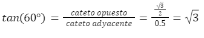

Unidad VI
6.1 Razones trigonométricas
Las razones trigonométricas de un ángulo α son las razones obtenidas entre los tres lados de un triángulo rectángulo. Es decir, la comparación por su cociente de sus tres lados a, b y c.
Dado un triángulo rectángulo, las razones trigonométricas del ángulo agudo α se definen:
El seno es el cociente entre el cateto opuesto y la hipotenusa.
El coseno es el cociente entre el cateto adyacente y la hipotenusa.
La tangente es el cociente entre el cateto opuesto y el cateto adyacente.
Lo anterior puede ser expresado mediante las siguientes fórmulas

Es importante mencionar que estas razones no dependen del tamaño del triángulo sino del ángulo. Esta propiedad permite que una vez conociendo el valor de las razones trigonométricas para un determinado ángulo, podamos utilizar dicho valor para cualquier otro triángulo con un ángulo igual, sin importar si este es más grande o más chico.
Debido a lo anterior, es de bastante utilidad el conocer el valor de las razones trigonométricas de algunos ángulos que se presentan con bastante regularidad en la trigonometría, a estos ángulos se les suele llamar ángulos notables.
Cálculo de las razones trigonométricas de algunos ángulos notables.
Para encontrar las razones trigonométricas de un ángulo de 60° se trabaja con un triángulo equilátero cuyo lado vale 1, esto gracias a que sabemos que los ángulos internos de cualquier triángulo siempre suman 180° y como en este caso usaremos un triángulo equilátero, estos tienen la propiedad de que sus tres lados y sus tres ángulos miden lo mismo, y como en total deben sumar 180°, dividimos entre tres y encontramos que los ángulos internos del triángulo equilátero miden 60° cada uno.
Sin embargo, las razones trigonométricas están definidas solamente para triángulos rectángulos y este es equilátero, por lo que es necesario recordar otra propiedad de los triángulos equiláteros, y es que la altura de este tipo de triángulo es la longitud de la línea recta perpendicular que va desde la mitad de la base hasta el vértice opuesto a dicha base, de modo que al ser una recta perpendicular a la base, se forma un ángulo de 90°, y al pasar justo por la mitad del ángulo del vértice C, el ángulo formado mide 30°. Lo anterior se puede observar en la siguiente imagen.
De este modo conocemos un cateto y la hipotenusa del triángulo rectángulo BCD, dado que el cateto conocido es adyacente al ángulo de 60°, podemos calcular el coseno de dicho ángulo. Por lo que escribimos la fórmula.
Ahora para calcular el seno es necesario conocer el valor del cateto opuesto, por lo que hay que calcularlo usando el teorema de pitágoras. Por lo que escribimos el teorema y lo desarrollamos como ya hemos explicado en temas anteriores.
Y ya hemos encontrado la longitud del cateto opuesto al ángulo de 60°, y con esto ya podemos calcular el seno de dicho ángulo. Para esto hacemos uso de la fórmula.
Y hemos encontrado el valor del seno de un ángulo de 60°.
Teniendo el valor del cateto opuesto y del adyacente también ya podemos calcular la tangente del ángulo de 60°, por lo que hacemos uso de la fórmula de la siguiente manera.
Y de esta forma hemos calculado la tangente de un seno de 60°, con lo que ya hemos calculado las razones trigonométricas de un ángulo de 60°.
Ahora bien, podemos hacer uso del mismo triángulo pero centrándonos en el ángulo superior que mide 30° para realizar el cálculo de las razones trigonométricas de dicho ángulo. Para ello, hay que identificar los datos, porque al cambiar de punto de referencia cambian también el cateto opuesto y adyacente. De modo que ahora los datos quedan de la siguiente manera.
Una vez teniendo los datos podemos proceder a calcular las razones trigonométricas del ángulo de 30°, para esto simplemente se hace uso de las fórmulas como se vio anteriormente.
De esta forma hemos calculado las razones trigonometricas para angulos de 60° y 30°.
Otro ángulo notable que aparece frecuentemente en la geometría, es el ángulo de 45°. Para calcular las razones trigonométricas de este ángulo, podemos hacer uso de un cuadrado unitario, es decir un cuadrado cuyos lados tengan una longitud de 1 unidad. Si trazamos una diagonal de dicho cuadrado, resultara un triángulo rectángulo con dos ángulos de 45°, en la siguiente imagen podemos observar esto.
De este triángulo conocemos ambos catetos, dado que coinciden con los lados del cuadrado que miden 1 unidad. Por lo que nos faltaría conocer la hipotenusa, para calcularla, al igual que en el caso anterior, se hace uso del teorema de pitágoras, por lo que tenemos lo siguiente.
Y así es como obtenemos la hipotenusa de este triángulo.
Ahora solo nos resta encontrar las razones trigonométricas para ello identificamos nuestros datos y luego los sustituimos en las fórmulas.

Y de esta forma tenemos las razones trigonométricas de un ángulo de 45°.
Aplicación de las razones trigonométricas.
Hasta ahora hemos visto cómo realizar el cálculo de las razones trigonométricas, sin embargo, no hemos visto aún el uso que se les suele dar a estas. Las razones trigonométricas surgieron como un método diferente a lo es el teorema de Pitágoras para encontrar los lados de un triángulo rectángulo. Esto es posible debido a que, como dijimos, una razón trigonométrica no depende de la longitud de los lados del triángulo, sino que depende solamente del ángulo, debido a esto, una vez que tienes el valor de las razones trigonométricas de un ángulo, es posible saber el tamaño de los lados de un triángulo conociendo solo uno de ellos. A continuación se presenta un ejemplo.
Supongamos que tenemos el siguiente triángulo donde uno de sus catetos tiene una longitud de 3.5 cm y el ángulo B mide 30°.
Para resolver el triángulo, o encontrar la medida de todos sus lados, vamos a hacer lo siguiente. Como ya conocemos las razones trigonométricas del ángulo de 30° vamos a hacer uso de ellas para encontrar los demás lados. Por lo que primero escribimos los datos con los que contamos, hay que tener en cuenta que nuestro punto de referencia es el ángulo conocido.
El coseno del ángulo de 30° ya lo habíamos calculado anteriormente y es un valor bien conocido. Escribimos la fórmula del coseno.
De esta fórmula sólo desconocemos la hipotenusa por lo que es necesario despejar dicha incognita para poder encontrar su valor, de modo que hacemos lo siguiente.
Ahora que la variable está despejada simplemente hay que sustituir los valores que conocemos.
Y con esto hemos encontrado la hipotenusa del triángulo, con lo que podemos calcular el lado faltante haciendo uso de otra razón trigonométrica, como puede ser el seno.
Así que escribimos los datos que tenemos.
Hipotenusa=4.041
sen(30°)=0.5
Como el dato que desconocemos es el cateto opuesto vamos a despejar esa incógnita. Y después sustituimos los valores conocidos.
Y de este modo hemos hallado todos los lados del triángulo.
Como pudimos observar, el procedimiento para encontrar los lados de un triángulo es extremadamente sencillo, aunque existe el requisito de que debemos conocer el valor de las razones trigonométricas del ángulo con el que contamos. Debido a lo anterior, se pueden encontrar algunas tablas con los valores de las razones trigonométricas de una gran variedad de ángulos, misma que puede ser consultada con el fin de resolver problemas del tipo visto aquí.